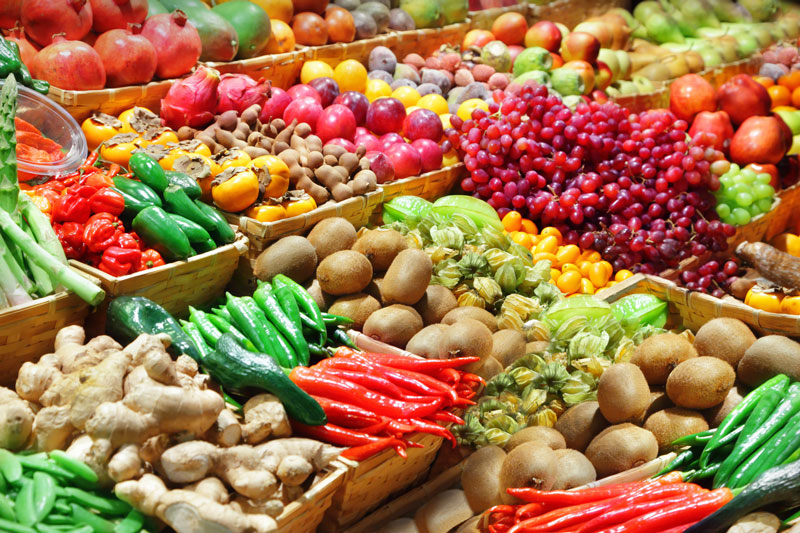

Benefícios
Nossa solução oferece benefícios como aumento da produtividade agrícola, redução do desperdício de recursos, maior eficiência na distribuição de alimentos e a promoção de práticas sustentáveis.


Enfrentando os desafios globais da fome e escassez de alimentos com soluções inovadoras e sustentáveis.
Através do uso de Inteligências Artificiais Generativas, Tecnologia e Inovação, a solução proposta visa otimizar a produção agrícola, melhorar a eficiência na distribuição de alimentos e desenvolver alternativas sustentáveis, visando mitigar a fome e a escassez de alimentos no mundo, de forma inteligente e ecologicamente responsável.
Veja maisNossa solução utilizará tecnologias como Inteligência Artificial (IA), Internet das Coisas (IoT) e sistemas de monitoramento em tempo real para otimizar a produção agrícola, identificar problemas precocemente e promover ações corretivas
Nossa solução oferece benefícios como aumento da produtividade agrícola, redução do desperdício de recursos, maior eficiência na distribuição de alimentos e a promoção de práticas sustentáveis.